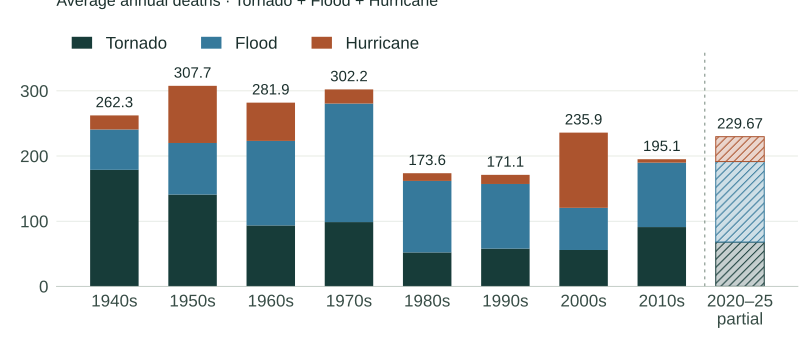
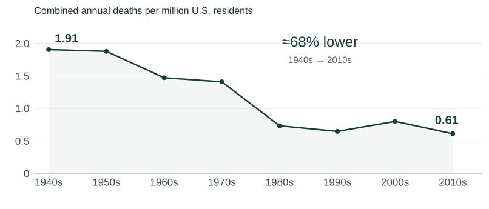

ECON 238 — Environmental Economics · Fall 2026
Risk Didn't Disappear.
Vulnerability Changed.
Deaths relative to population fell sharply. Flood exposure persisted.
Consistent with adaptation—not proof of its causal contribution.
Combined annual deaths per million residents
1940s → 2010s
Tornado + Flood + Hurricane
Eight complete decades · NWS & Census [1, 2]
01 / The annual toll

02 / Population changes the story

Raw annual mortality fell about 26%, while average population grew from 137.7 million to 319.3 million. Both trends matter; neither identifies the cause of changing mortality.
03 / Migration & flood exposure
It depends how closely you look.
Qin and Voorheis (2026) link flood risk to Census survey and administrative data. The exposed-household count rose; the exposed share was nearly flat. Coarse geography can change the migration story. [3]
| Measure | Finding |
|---|---|
| Flood-exposed households | ~11 million in 1999 → >15 million in 2023 |
| Share of households exposed | Approximately 14.2%–14.4% |
| Census-block migration | Increasing net migration toward floodplain blocks |
| Parcel-level migration | Essentially no net migration toward flood-risk parcels |
1999–2023 · Expansive FEMA parcel definition: A, V, or 500-year floodplains. Approximate figures remain approximate. A research working paper, not an official Census policy position.
Growth ≠ migration. ~11 million → >15 million exposed households is not evidence that migration added four million. Household formation, births, and international immigration differ from moves within the United States.
What economics adds
Risk = hazard × exposure × vulnerability
Conceptual framework, not an estimated equation. [5]
Forecasting, warnings, safer buildings, drainage, evacuation, emergency response, income, technology, and behavior can reduce vulnerability. Their roles are mechanisms to test, not effects identified by these charts.
People trade safety against jobs, housing costs, and amenities. Ask what protection costs, who pays, how insurance affects incentives, when public goods matter, and who lacks access to capital and reliable energy.
A different mortality measure
These numbers are not measuring the same thing.
Burke et al. estimate ambient-temperature effects using data from 30 countries: approximately 5–12% of all deaths across countries in their sample. Cold contributes more than heat in the contexts studied; local adaptation does not eliminate exposure. [4]
NWS event counts
Reported fatalities assigned to weather-hazard categories.
Burke temperature attribution
Statistical estimates relating overall mortality to ambient temperature; many deaths need not be coded as heat or cold.
Do not add these estimates or compare them as competing totals. Higher income is not uniformly protective, and many proposed interventions lack strong causal evidence. [4]
Intervention test: cooling access has purchase, electricity, maintenance, and grid-reliability costs. Evaluate actual health effects and alternative uses of the budget—not simply the number of units supplied. Cost-effectiveness cannot be asserted without costs and credible effect estimates.